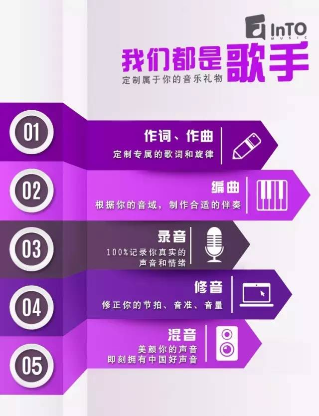
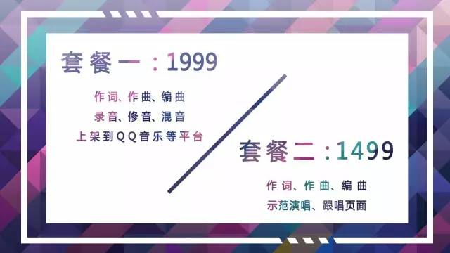

定制歌曲 - 我们都是歌手

STEP 01
作词 作曲
InTO音乐人会根据你的故事以及想要的曲风，创作出专属于你的歌词和旋律。你不会作词，没关系，你只需简单直诉出你的故事和小情绪。你不会作曲，没关系，你只需在万千歌曲挑出偏爱的曲风。
STEP 02
编曲
有了词和曲，接下来该为你做伴奏了！编曲老师会根据你的音域(即你所能唱的最高音和最低音)和你喜欢的乐器，制作出适合于你唱的伴奏。
STEP 03
录音
一旦进了录音棚，你就是歌手，一切由你主宰，你的话就是最高级别，你就是主角，你就是明星。
跟着伴奏和歌词一遍两遍，慢慢进入状态，嗓子也会打开，发声更加轻松，歌曲更加熟悉，（如果背过歌词更容易专注和融入音乐哦），录音师会记录下每一次声音，并择选出好的声音素材。别害怕唱错，我们有充裕的时间重新录制和补录。
STEP 04
修音
歌手也会出错，唱歌时总难免出现抢拍子，拖拍子，气息不匀，感情不到位，音准偏差，歌词卡顿，唾液星子喷溅，状态不佳，心情烦躁，喉咙干燥等影响声音发挥的问题。
根据不同歌者的呈现，最终的录音素材中，就势必要做相应的去除杂音和噪音（如吧嗒嘴，粘舌头，喘气呼声，低频杂波），修正节拍，以及修正音准的工作，尽最大可能呈现出完美的音乐，不然如何满足日渐挑剔的耳朵？
STEP 05
混音
声音都是由低中高频的配比所组成，如王菲、周杰伦、孙燕姿、bigbang他们专辑里的声音和现场演唱的感觉是不一样的哦，听歌时我们会形容这声音或清澈透亮或浑厚有力或悠扬有深度等等，其实悄咪咪告诉你们混音可是大功臣哦。
混音通常用 EQ均衡，压缩，混响这三大件，还有数不尽的音效处理器在为此献身，最终为了凸显声音的特质和悦耳度。在多轨道的混音中更强调的是平衡，每个乐器、音色都要体现出它的音乐价值，但最终流行音乐中一切乐器和音效都服务与人声的表达。
是谁，在抹平我的思绪！
是谁，在波动我的心弦！
是谁，在玩命抚慰我的耳朵！
